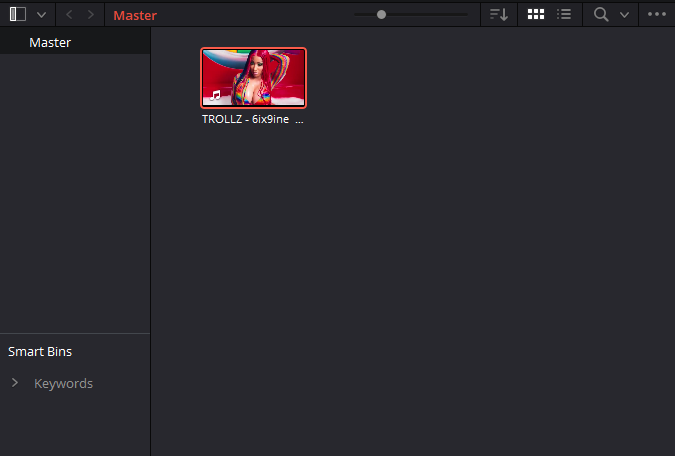
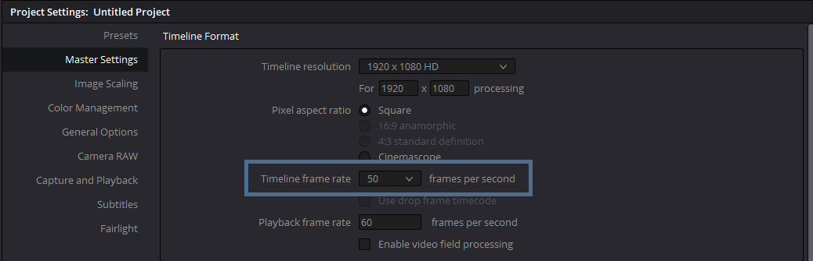
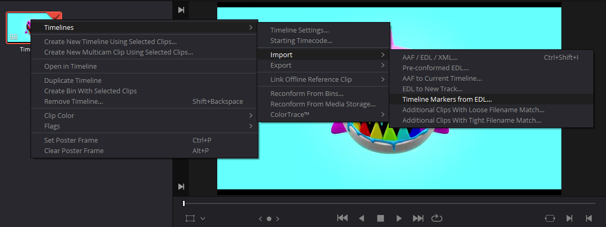

Markers can be placed with the keyboard buttons "1", "2" and "3" for blue, red and green marker.
1. Put the exact Audio or Video, with which you recorded the markers, into the Media Pool.

2. IMPORTANT: Set the Timeline frame rate to the frame rate you selected in the settings (The standart is 50).

3. In the Media Pool, right click on "Timeline 1", select Timelines > Import > Timeline Markers from EDL. Then select the .edl file you previously created. It will take a short time until all markers are loaded.
